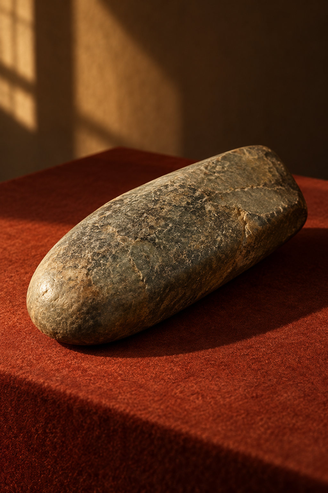

An archive of everyday wonder
Ordinary is extraordinary.
A fictional museum dedicated to the overlooked objects that hold our stories.
Browse the collection
Object 001 / A stone, foundSmall things,
big stories.
A stone, found Nature
A button, kept Memory
A letter, folded Connection
Some things become important not because they are rare, but because someone chose to keep them.